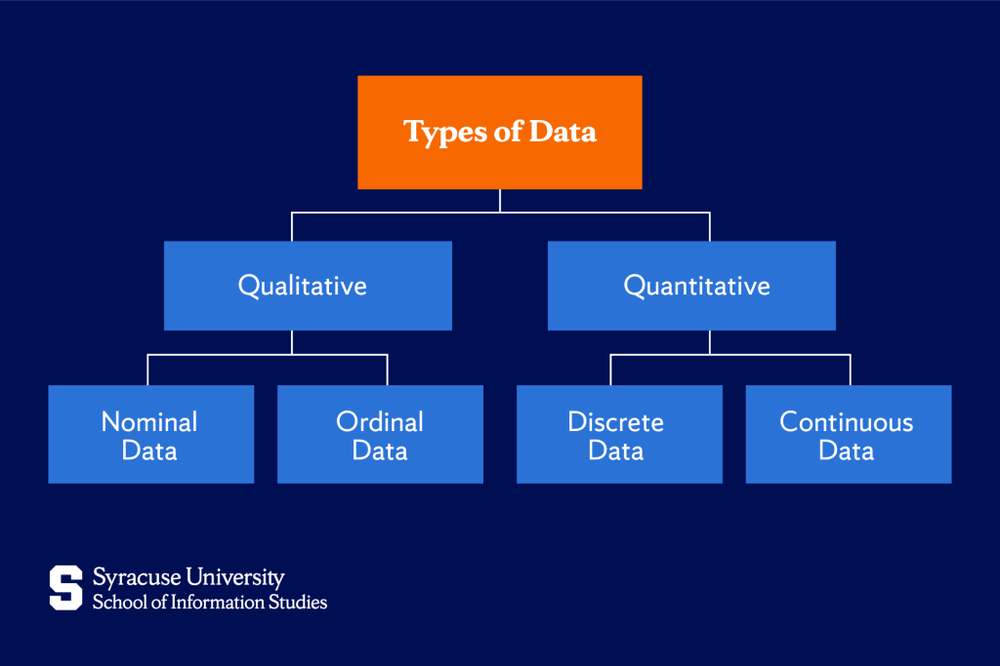

IBM describes data as collections of facts, numbers, words, observations, or other pieces of information that can be used for reference or analysis.
In its raw form, data is simply a set of symbols, values, or recorded details that represent real measurements or abstract ideas. A single piece of data (called a datum) doesn’t tell us much on its own. Data becomes meaningful only after it is organised, processed, and analysed to reveal patterns, trends, or context.

Image Source: Syracuse University School of Information Studies